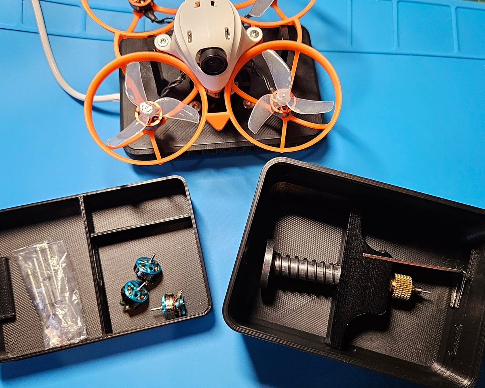

Whoop Workbench Box
A spares box and repair stand for tiny whoops. Open the lid and your whoop clips onto the holder so you can work on it. Props, motors, screws and tools go in the removable tray and the box underneath, and the lid takes a 30 mm fan to cool the drone or pull solder fumes away from you.

Printed in the UK in black PLA, made to order. Includes the box, lid, holder, divided tray and the countersunk screws and nuts for the fan.
Box, lid, holder and tray files. Personal-use licence.
What it fits
The BetaFPV Air65 and Air75 both clip into the holder (tested). Other 65 to 75 mm whoops with a similar frame may fit too, because the holder is just two posts that slot in. Message me if you want to check yours.

Not included
The fan (30 x 30 x 10 mm, USB powered) and its cable are not included. Any 30 mm fan with four mounting holes will fit. The drone, motors, spares and tools in the photos are for show.
Custom colours or layouts
Want it in another colour, or the tray laid out for your own kit? Ask for a custom print.
Not made by or affiliated with BETAFPV or any drone brand. Made by Marrow Hill, UK.